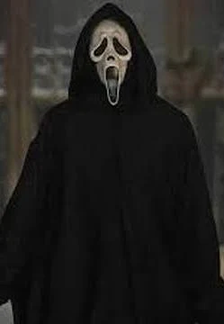

Sidney Prescott é a protagonista do filme. Ela enfrenta o assassino e tenta sobreviver.
Ghostface é o vilão principal. Ele usa uma máscara assustadora e ataca suas vítimas.

Voltar para página inicial